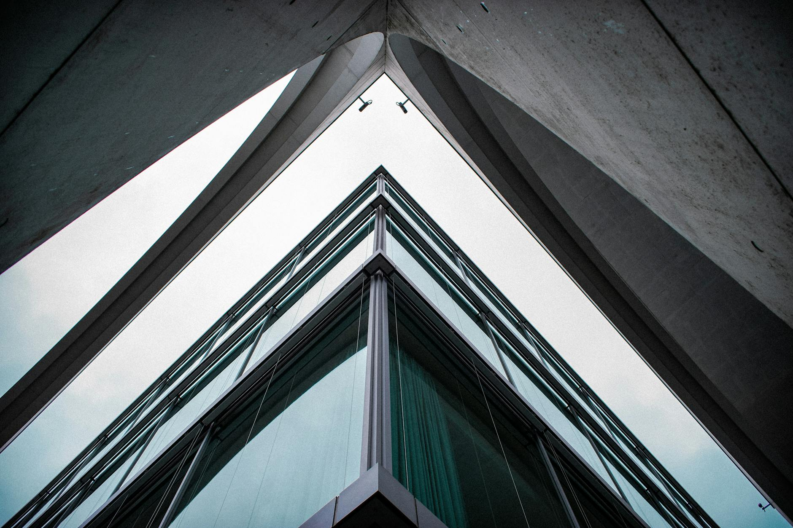
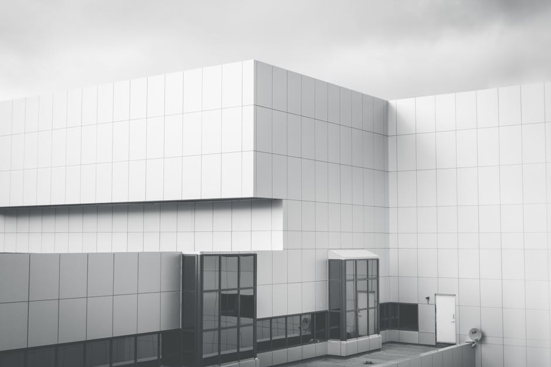
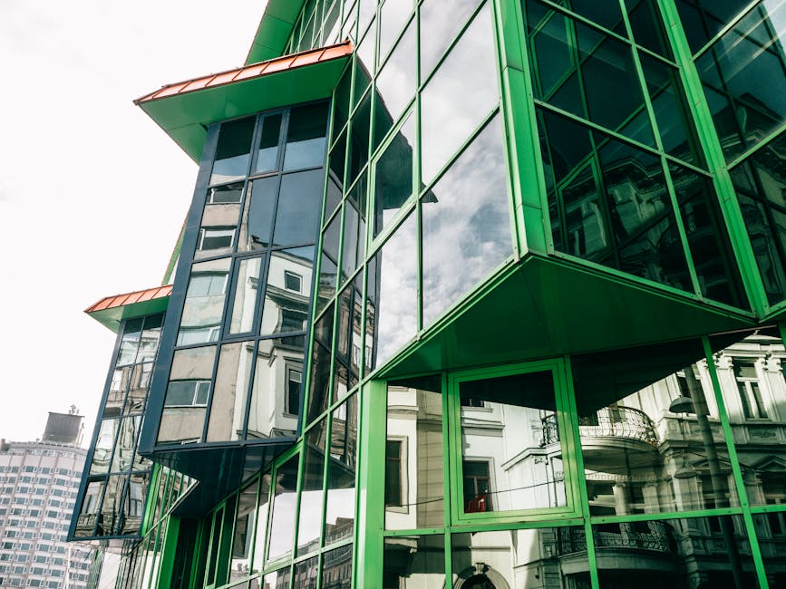
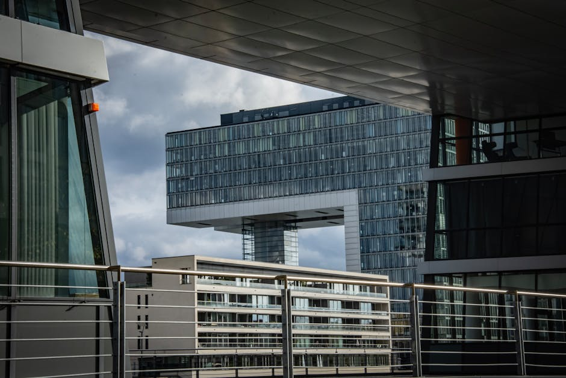
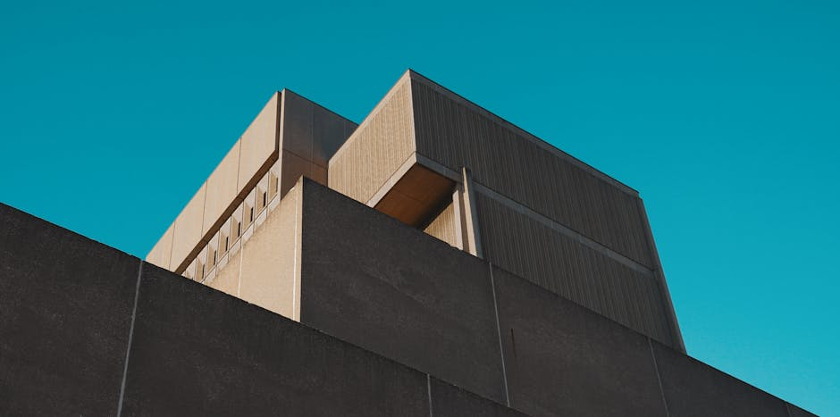

Cedar & Stone is an architecture studio crafting homes, civic buildings, and interiors rooted in place, light, and the lives they hold.


Cultural · Brackton

Residential · Aspen

Civic · Portland

Commercial · Seattle
We study how light, climate, and context shape a site before a single line is drawn — so the architecture belongs, and endures. You work directly with the principals, first sketch to final walkthrough.
Residential, cultural, and commercial work from concept to completion.
Considered interiors that carry the architecture all the way through.
Buildings and grounds designed as one continuous experience.
Feasibility, phasing, and permitting handled entirely in-house.
Hands-on through construction, protecting the design to the last detail.
Low-energy, daylight-led design as a default, not an add-on.